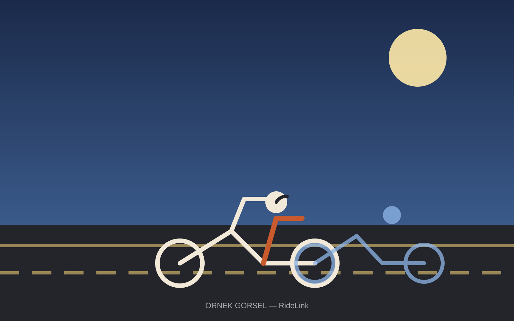

RideLink; telefon numarası, bağlantı ya da QR koduyla saniyeler içinde sürüş grubu kurmanı sağlar. Hangi interkom markasını kullandığınız önemli değil — grup sesli iletişim, canlı konum ve kaza bildirimi herkeste aynı şekilde çalışır.

Mevcut interkom markanız ne olursa olsun RideLink üstte çalışır.
Telefon numarası, bağlantı ya da QR kod ile sürüş grubunu saniyeler içinde kur.
Bluetooth kulaklığınla grup içi sesli iletişim; internet yoksa Bluetooth/Wi-Fi Direct devreye girer.
Canlı konum, rota takibi ve kaza bildirimi — grubun her zaman birbirinden haberi olur.
Grup arkadaşların farklı interkom markaları kullanıyor olabilir — sorun değil.
Bluetooth ses cihazın varsa RideLink ile grup sesli iletişime katılabilirsin.
Grubun nerede olduğunu her an gör, kaybolan arkadaşını kolayca bul.
Ani durma veya çarpışma algılandığında gruba ve seçtiğin kişilere anında haber gider.
Mümkün olan yerlerde Bluetooth / Wi-Fi Direct ile bağlantı devam eder.
Tek başına sürenler için değil, birlikte sürenler için.
Hafta sonu sürüşlerinde herkes birbirini duysun.
Saha ekiplerinin birbiriyle ve merkezle anlık iletişimi.
Büyük gruplu sürüşlerde koordinasyon ve güvenlik.